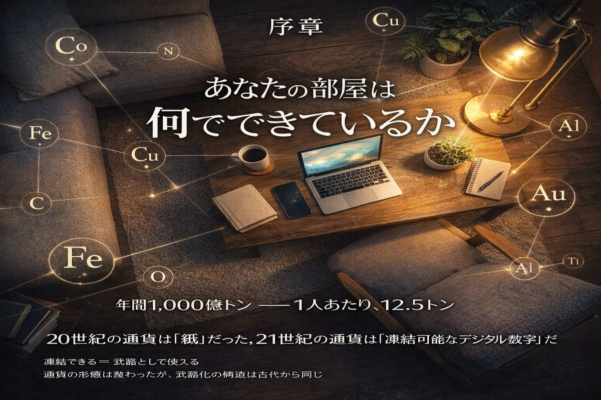
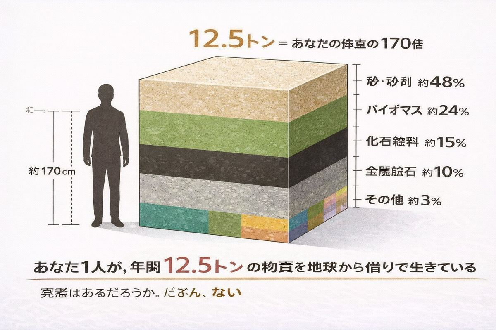
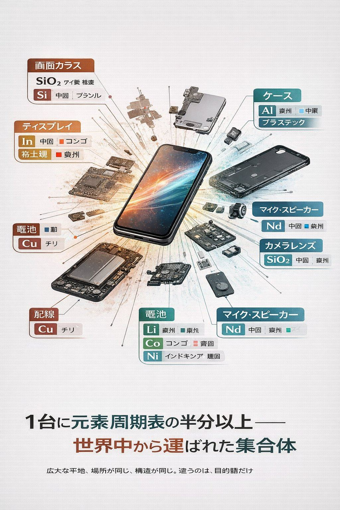

当たり前のものほど、見えなくなる。 ── 出典不明（しかし誰もが経験する真実）
A. 50億トン B. 100億トン C. 1,000億トン

正解はC。約1,000億トン。
世界人口を80億人として割り算すると、1人あたり約12.5トン。あなたの体重の170倍以上の物質が、毎年あなたのために地球から取り出されている。
実感はあるだろうか。たぶん、ない。
これが本書の出発点だ。私たちは何かに完全に依存しているのに、そのことをほとんど知らない。
今、あなたがいる場所を見渡してほしい。

スマートフォンが手元にあるだろう。プラスチックのケース、ガラスの画面、その下にシリコンのチップ、銅の配線、リチウムの電池、ネオジムの磁石、金のコネクタ、レアアースの蛍光体。1台に元素周期表の半分以上が入っている。
部屋に目をやる。コンクリートの壁。鉄筋。木の床。窓ガラス。アルミのサッシ。鋼の扉。電気を運ぶ銅線。塩ビの絶縁材。タイルのセラミック。塗料のチタン。
椅子の脚は鉄かアルミ。座面は布（ポリエステル）かレザー（おそらく合成）。机の天板は木かプラスチック。電源ケーブル、USBケーブル、Wi-Fiルーター、エアコン、冷蔵庫。
すべての物体には素材がある。すべての素材には来歴がある。誰かが、どこかで、それを地球から取り出して、運んで、加工して、組み立てて、ここまで届けた。
12.5トン。1人あたり、年間。あなたの部屋にあるすべてのモノは、その12.5トンの一部だ。
第1章で、石川啄木の歌を引く。
頬につたふ涙のごはず一握の砂を示しし人を忘れず
啄木の手のひらにあったのは、ただの砂だった。100年後、私たちの手のひらにはスマホがある。中身は、9桁高い純度に精錬された同じSiO₂──二酸化ケイ素。砂を2,500倍のエネルギーで12段階の工程をかけて作り直したものだ。
啄木の砂と、あなたのスマホ。同じ元素。違う並べ方。
これが本書を貫くひとつの視点だ。素材の正体は、何でできているかではなく、どう並べられているかにある。
私は哲学者でも科学者でもない。Webエンジニアで、独立研究者を名乗っている。専門は人間の認知とAIの関係を扱う論文を書くことで、素材科学は完全に専門外だ。
それなのに、なぜこの本を書いたか。
きっかけは、ある日「人類は一番何を使っているんだろう」と疑問に思ったことだ。鉄だろうか。コンクリートだろうか。プラスチックだろうか。調べてみると、答えは全部違った。
砂。
水を除けば、人類は砂を最も多く消費している。年間500億トン。鉄の25倍、プラスチックの100倍以上だ。しかも、その砂が今、世界中で奪い合いになっている。砂マフィアが存在し、ジャマイカでは一夜にして400メートルの砂浜が消え、シンガポールは砂で国土を作っている。
知らなかった。
そこから芋づる式に、知らないことが次々と出てきた。鉄器時代が始まったのは「鉄が強かったから」ではなく「青銅の交易が崩壊したから」だったこと。プラスチックは思っていたより少ないこと。レアアースは実は希少ではないこと。日本は資源大国になりうること。「マイニング」という言葉が新しい資源にも使われていること。
それぞれの事実は、すでに専門書に書かれている。でも、それらを横並びにして、9つの素材の物語として読める本は、見つからなかった。
ないなら、書くしかない。
本書は9つの章からなる。
| 章 | テーマ |
|---|---|
| 第1章 | 砂 ── 最強にして最も過小評価された王者 |
| 第2章 | 鉄 ── 熱いうちに |
| 第3章 | プラスチック ── 化石燃料はプラスチックの夢を見るか |
| 第4章 | 石油 ── 動かない血液 |
| 第5章 | 炭素 ── 鉛筆と指輪のあいだ |
| 第6章 | レアアース ── 17兄弟、分けられない |
| 第7章 | 日本 ── 拾い上げる |
| 第8章 | 加工 ── 火の温度の文明史 |
| 第9章 | 掘れない資源 ── ものすごく新しくてありえないほど古い |
各章は独立して読める。気になった素材から読み始めてOKだ。ただし順番に読むと、ひとつの大きな物語が見えてくる──それは、人類が118の元素をどう並べ替えて文明を作ってきたかという物語だ。
各章は同じ構成で書かれている：
ハンス・ロスリングが『FACTFULNESS』で「世界は思っているほど悪くない」をデータで示したように、本書は「世界は思っているのと違う素材でできている」をデータで示すことを目指している。
本書には双子がいる。インタラクティブな素材図鑑（Web版）だ。
🔗 https://osakenpiro.github.io/materials-of-civilization/
15のセクションで、本書のすべてのデータをホバー付きグラフで探索できる。生産量、リサイクル率、地理的偏在、加工難度、レアアース内訳、未来の素材まで。紙の本ではできないインタラクションが、そこにはある。
逆に、図鑑には物語がない。ただのデータの森だ。本書はその森の地図と、そこに住む生き物たちの物語を提供する。
紙で読んで、図鑑で確かめる。図鑑で見て、紙で物語を読む。どちらから入っても、同じ世界に着く。メビウスの帯のように、ふたつの面が一つにつながっている。
それでは、第1章を開いてほしい。
最初に出会うのは、最も身近で、最も見えなくなっている素材だ。あなたが今、座っている建物のほとんどを構成している、ありふれたもの。
砂。
水を除けば人類が最も多く使っている、過小評価された王者。
その物語から始めよう。
次章予告 第1章「砂 ── 最強にして最も過小評価された王者」 Q: 水を除いて、人類が最も大量に消費する物質は何か？ 答えは、あなたの足元にいくらでもある。